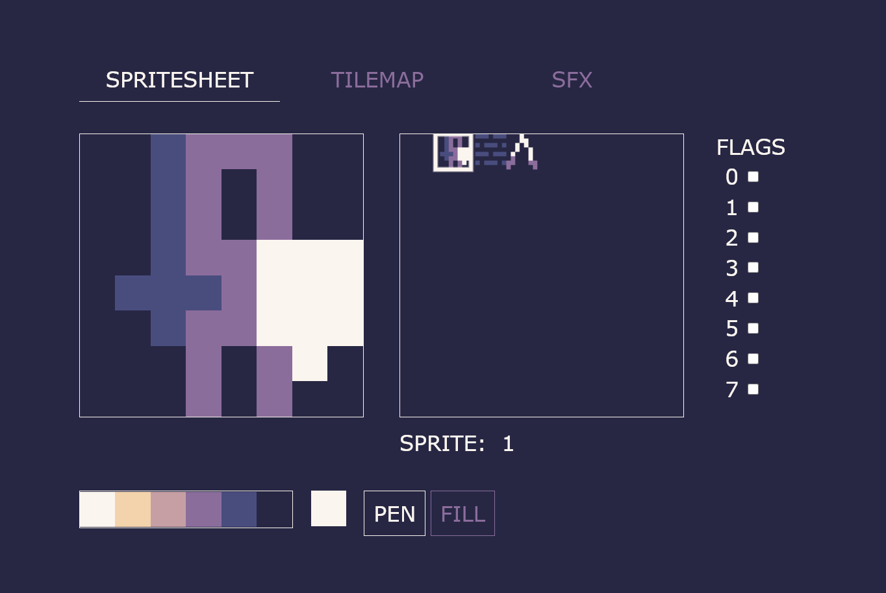
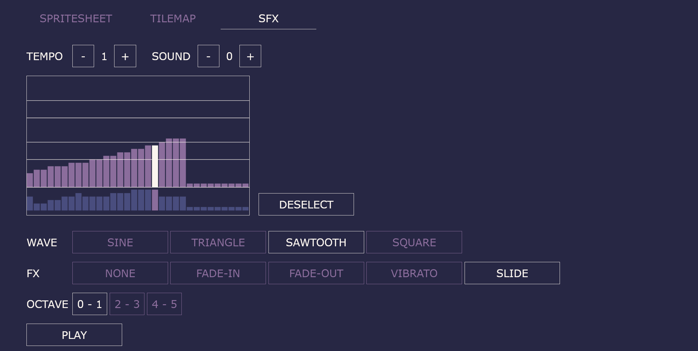

Thank you for checking JBox! Just a quick heads up: JBox is in an early stage of development. It's fully functional, but may include rough edges and bugs. It is, however updated often, and updated a lot, so these keep disappearing even as I write these words.
JBox is a set of simple open source tools to create
tiny web games in Javascript

JBox is inspired by Pico-8, the Pyxel Engine and similar fantasy consoles and fantasy-console-likes. It provides a simple set of tools to draw sprites, tilemaps and create sounds, along with a tiny Javascript library with simple API modelled after the Pico-8.
Simple and easy to use
The tools are simple and minimal, there's not much to learn, there's not much in the way of setup, and you don't need anything except for a browser and a text editor. You can get up and running in minutes.
Constraints to fuel creativity...
Taking inspiration from fantasy consoles, JBox provides you with limited space to create your assets. With just 64 sprites, 32 sounds and a 8x8 screen tilemap the resources are tight, but this also means that you won't get bogged down in details, and you can finish your game quickly.
...but you can cheat!
There's no code limit - JBox is not an isolated environment, it's just a library. You can also include multiple sets of assets if you wish, and JBox provides functionality to easily switch between them.
It's just plain Javascript
You don't need any complex build tools or advanced next-gen features. Just plug in the library in a script tag, along with the data generated from the editor and your own code. It's dead simple, just like in the olden days when the world was young.
Batteries included
JBox gives you all the tools you need to create tiny pixel art games. The game editor allows you to create assets and save them on your machine. The library provides basic functions for display, input, sounds and a game loop.
It's really tiny!
Depending on how many pictures you draw and how much map you fill, the library together with the assets can take as little as 6kB zipped. You can totally use it for Js13k jams!
Game editor
Use the editor to create images, maps and sounds for your game. The data is saved as a javascript file that you just embed into your HTML together with the library and your own code.
Use the sprite editor to draw your sprites
You get a total of 64 8x8 pixel sprites and a 6 color palette. You can then draw them in your game by simply referring to their numbers.
Use the tilemap editor to create maps using the sprites you've drawn

You get a total of 8x8 screens of 16x16 tiles. Use the sprites you've drawn in the sprite editor to fill your maps. You can also change the map programmatically in game code by simply referring to tile coordinates. Drawing a map in your game is as simple as map().
Use the SFX editor to make bleeps and bloops
You can make 32 sound effects, each consisting of 32 segments. There are several waveforms and special effects to spice things up. You can also make some simple music in the editor, although a more advanced tracker-like music editor is in the works as we speak.